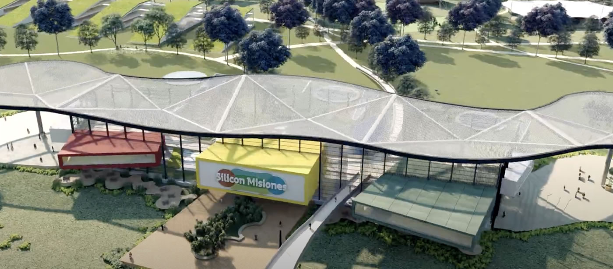

Silicon Misiones
Nós somos o futuro e você faz parte

Silicon Misiones é um projeto associativo que envolve empresas de base tecnológica, universidades e institutos públicos e privados.
Silicon Misiones é um projeto associativo que envolve empresas de base tecnológica, universidades e institutos públicos e privados.